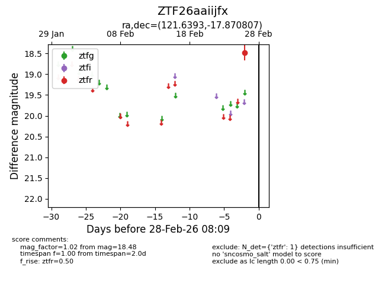
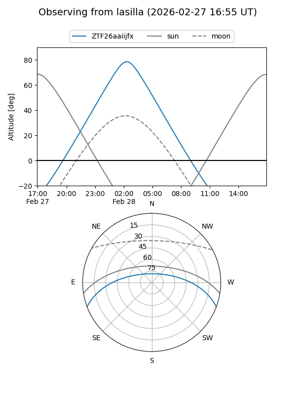
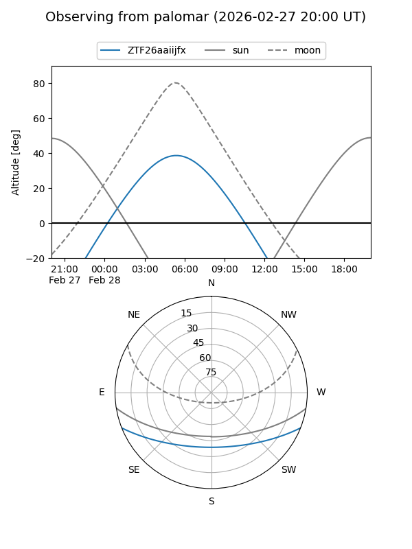

ZTF26aaiijfx
Target ZTF26aaiijfx at 2026-02-28 08:10
Aliases and brokers:
FINK: link
Lasair: link
ALeRCE: link
alt names
ZTF26aaiijfx (ztf,fink_ztf)
Coordinates:
equatorial (ra, dec) = 121.6393,-17.87081
equatorial (HMS+DMS) = 08:06:33.42,-17:52:14.91
galactic (l, b) = (237.5465,+7.62926)
Flags:
Photometry:
last ztfr=18.48
1 ztfr detections
Lightcurve

Visibility


Additional plots